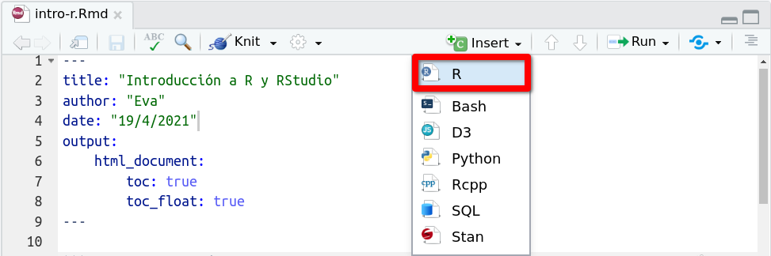
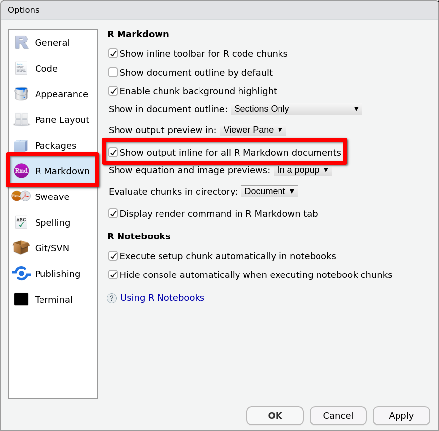
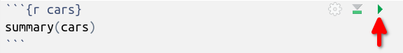

3 Plantilla de R Markdown
En el capítulo anterior hemos explorado los contenidos de muestra del archivo de R Markdown que hemos creado, y conocemos los dos elementos principales a incluir en este tipo de documentos:
los encabezados, para estructurar nuestro documento en capítulos, secciones, subsecciones …
y los bloques de código, para incluir instrucciones de R.
Ahora vamos a reemplazar los contenidos de muestra por nuestros propios contenidos. Crearemos un primer capítulo con un primer bloque de código, y personalizaremos algunas opciones.
Al final de este capítulo tendremos una plantilla para los documentos R Markdown que usaremos en las prácticas y tareas a lo largo del curso.
Y nuestro documento intro-r.Rmd quedará preparado para practicar el código de R que se presenta en los siguientes capítulos de esta práctica.
3.1 Primeros contenidos
Borra los contenidos de muestra (línea 12 en adelante) y añade la siguiente línea para crear un primer capítulo (encabezado de nivel 1) de título “Bloques de código”:
# Bloques de códigoAhora vamos a crear el primer bloque de código. Para escribir su esqueleto usa el atajo
Ctrl + Alt + I
(I de Insert) o, alternativamente, el menú
en la barra de herramientas de la pestaña del documento, que se muestra en la siguiente imagen:

En el bloque de código que acabas de crear añade las instrucciones
sqrt(8)
sqrt(10)de forma que los contenidos añadidos queden:
# Bloques de código
```{r}
sqrt(8)
sqrt(10)
```Compila para ver el resultado.
3.2 Algunas opciones
Tras compilar el documento con los contenidos añadidos en la sección anterior, verás que en el documento HTML generado aparecen:
- El código de la primera instrucción
sqrt(8) - Su salida 2.8284271
- El código de la segunda instrucción
sqrt(10) - Su salida 3.1622777
Para que se muestre primero el código para las dos instrucciones y a continuación las dos salidas, añade la opción results='hold'.
Y para omitir los caracteres ## al comienzo de las líneas de la salida, añade la opción comment = ''. Nuestro bloque de código con estas dos opciones quedaría:
```{r, results='hold', comment = ''}
sqrt(8)
sqrt(10)
```Vuelve a compilar y observa el resultado.
3.3 Opciones globales
Al comienzo de nuestro documento, hemos conservado el bloque de código
```{r setup, include=FALSE}
knitr::opts_chunk$set(echo = TRUE)
```que estaba incluido en el documento de muestra. Este bloque se identifica con la etiqueta setup y tiene la opción include=FALSE, que hace que, al compilar el documento, si bien se ejecutará la instrucción que contiene, no se incluirá en el formato HTML de salida.
Se explica a continuación el significado de la instrucción knitr::opts_chunk$set(echo = TRUE): Las opciones especificadas como argumentos de knitr::opts_chunk$set (por ahora echo=TRUE) aplicarán a todos los bloques de código que se incluyan en el documento.
Las opciones results='hold' y comment = '' que hemos aplicado antes a nuestro bloque de código tendrían un efecto local, es decir, aplicarían solo al bloque en el que se han especificado, y si queremos usarlas en los nuevos bloques que creemos, habría que escribirlas de nuevo en todos ellos.
Para aplicar las opciones results='hold' y comment = '' a todos los bloques de código del documento, las añadiremos como argumentos de knitr::opts_chunk$set, de forma que quede:
knitr::opts_chunk$set(
echo = TRUE,
results='hold',
comment = ''
)Ahora, estas dos nuevas opciones aplicarán a todos los bloques, sin necesidad de repetirlas de forma individual en cada uno de ellos, así que puedes borrarlas del bloque de código que creaste antes.
3.4 Ejecución de instrucciones individuales
Cuando compilamos un documento R Markdown, se ejecutan todos los bloques de código que contenga, y en el documento compilado podemos visualizar, tanto el código como la salida o resultado (siempre que no hay opciones como echo=FALSE o include=FALSE que inhiban la impresión del código y/o de la salida).
Pero también podemos ejecutar determinadas instrucciones de forma individual, sin necesidad de compilar el documento completo. Para ello, podemos proceder exactamente igual que en el caso de los scripts, es decir:
Para ejecutar una sola instrucción, situamos el cursor en cualquiera de las líneas que compongan la instrucción y presionamos
Ctrl + Enter.Para ejecutar varias instrucciones, seleccionamos las correspondientes líneas y presionamos
Ctrl + Enter.
La salida se mostrará en la consola, y también incrustada en el propio documento, justo debajo del correspondiente bloque de código. Para esto último ha de estar marcada la opción Show output inline for all R Markdown documents en las opciones para R Markdown en el menú
como muestra la siguiente imagen: 
Además, podemos ejecutar todas las instrucciones que componen un bloque de código utilizando el botón a la derecha del comienzo del bloque que se resalta en la siguiente imagen:

3.5 Tabla de contenidos flotante
Ahora vamos a personalizar el formato de salida para que nuestro documento incluya una tabla de contenidos flotante con las secciones numeradas.
Para ello sustituimos la línea
output: html_documenten la cabecera YAML por
output:
html_document:
toc: true
toc_float: true
number_sections: trueAsegúrate de indentar las líneas conforme se indica, porque el indentado es fundamental para que los campos anidados se lean e interpreten correctamente en el proceso de compilación.
Para que nuestra tabla de contenidos tenga más de una entrada, añade al final del documento un segundo capítulo, con el título de otro capítulo de esta práctica:
# PaquetesCompila de nuevo y abre el resultado en el navegador. Verás la tabla de contenidos flotante a la izquierda del cuerpo del documento (o encima del título en pantallas de dimensiones reducidas).
Para apreciar la funcionalidad de la tabla de contenidos flotante, reduce la altura de la ventana del navegador hasta que sea inferior a los contenidos en el cuerpo del documento y aparezca la barra de scroll para recorrerlo. Verás que las entradas de la tabla de contenidos actúan como enlaces al inicio de cada capítulo.
3.6 Secciones numeradas
Para numerar los capítulos añade number_sections: true como opción para el formato de salida:
output:
html_document:
toc: true
toc_float: true
number_sections: true3.7 Plantilla final
Después de los cambios que hemos ido haciendo en el documento de muestra, ha debido quedarte así:
---
title: "Introducción a R y RStudio"
author: "Eva"
date: "19/4/2021"
output:
html_document:
toc: true
toc_float: true
number_sections: true
---
```{r setup, include=FALSE}
knitr::opts_chunk$set(
echo = TRUE,
results='hold',
comment = ''
)
```
# Bloques de código
```{r}
sqrt(8)
sqrt(10)
```
# Paquetes La primera parte del documento, con la cabecera YAML y el bloque de nombre setup con las opciones de configuración globales para los bloques de código, la repetiremos en todos los documentos R Markdown a lo largo del curso.